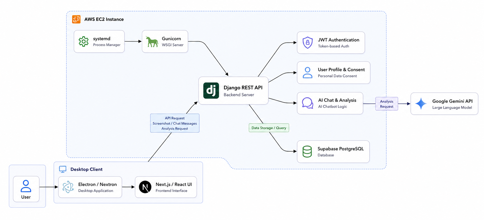
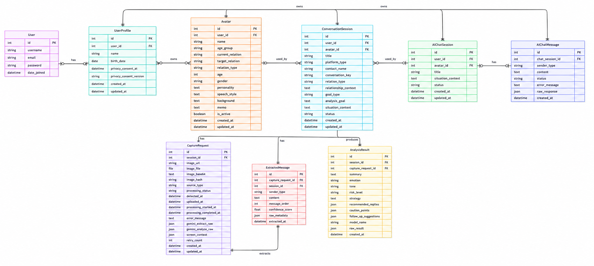
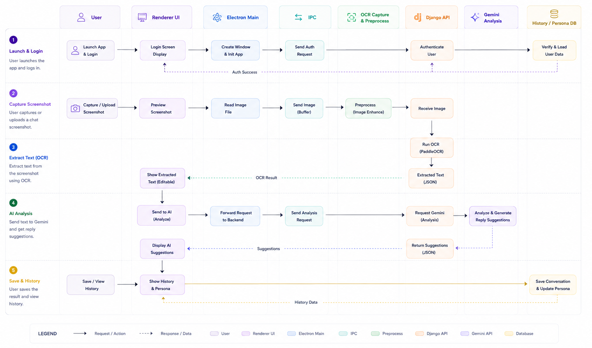
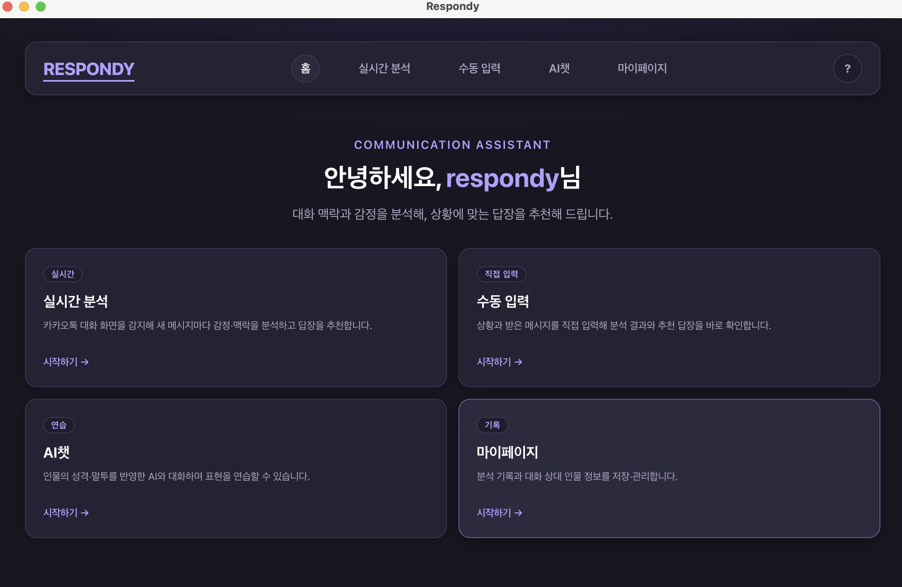
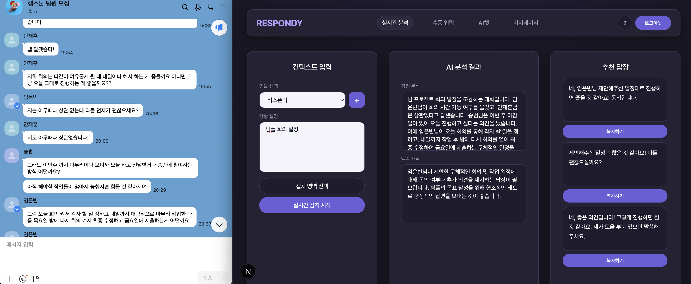
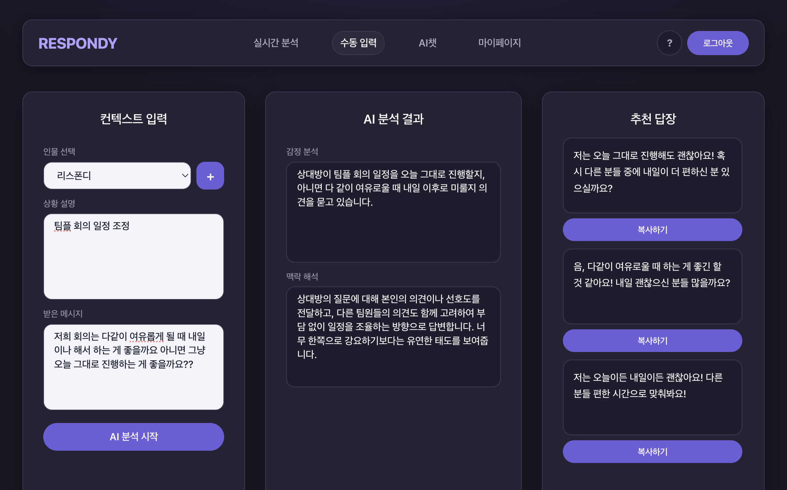
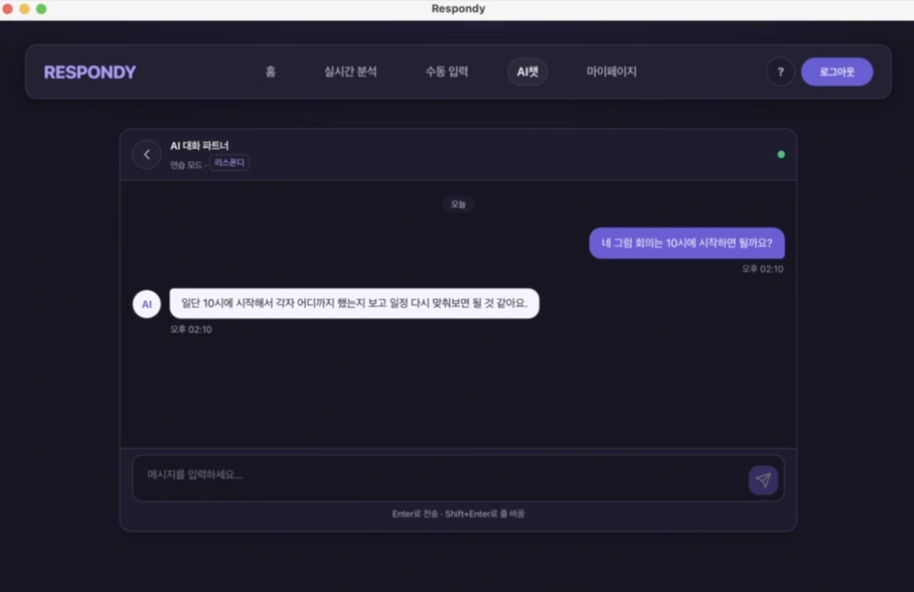
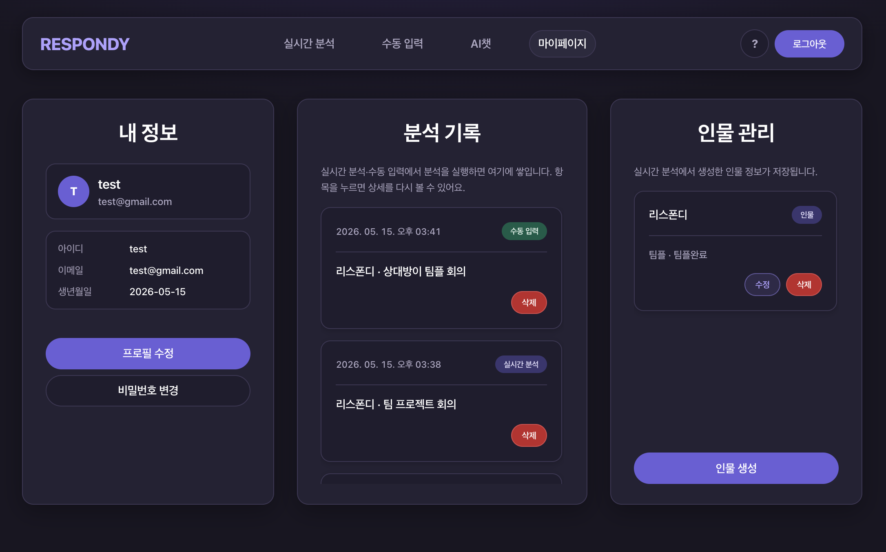

Mar 2026 – Jun 2026 (Seoul)
Respondy – AI-powered Chat Assistant
An AI-powered desktop application that analyzes chat screenshots and provides context-aware reply suggestions using Google Gemini.
Overview
Respondy is an AI-powered desktop chat assistant that provides real-time, context-aware reply suggestions from chat screenshots. Users can upload screenshots, receive AI-generated responses, and review conversation history within the desktop application.
The application streamlines everyday messaging by combining real-time screenshot analysis with Gemini-powered response generation in a desktop Electron environment.
Tech Stack
Architecture Diagram

ERD

Workflow

- Users upload a chat screenshot through the desktop application.
- The frontend sends the image to backend services via REST APIs.
- The backend analyzes the screenshot in real time and generates reply suggestions using Gemini.
- Suggested replies and conversation history are displayed in the desktop application.
Product Walkthrough





Key Features
- Real-time screenshot analysis
- Real-time AI reply suggestions
- Conversation history
- Desktop application built with Electron
- REST API integration
My Contributions
- Developed the desktop frontend using Electron, Next.js, and React.
- Implemented user interfaces for screenshot upload, AI-generated reply suggestions, and conversation history.
- Integrated REST APIs to communicate with backend services for screenshot analysis and AI-generated responses.
- Improved the desktop user experience by implementing responsive and intuitive interfaces.
Challenges
- Building a frontend that could display AI-generated replies with minimal delay after screenshot upload.
- Integrating Electron with REST APIs while maintaining a smooth desktop user experience.
- Managing asynchronous image uploads and response updates efficiently.
What I Learned
- Learned how to build desktop applications using Electron, Next.js, and React.
- Gained practical experience integrating real-time REST API workflows into a desktop application.
- Improved my understanding of asynchronous state management and API communication.
- Learned how frontend applications interact with AI-powered backend services.